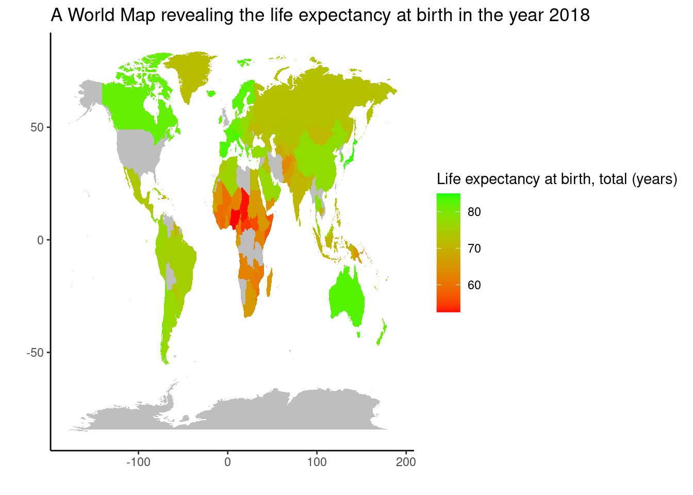

map_world <- map_data("world")
# world map :)
data_join %>%
filter(year == 2018) %>%
full_join(map_world, by = c("country" = "region")) %>%
ggplot(aes(x = long, y = lat, group = group, fill = `Life expectancy at birth, total (years)`)) +
geom_polygon() + scale_fill_gradient(low = "red", high = "green", na.value = "grey") +
labs(x = "", y = "", title =
"A World Map revealing the life expectancy at birth in the year 2018") +
theme_classic() +
theme(text = element_text(family = "helvetica"))Warning in full_join(., map_world, by = c(country = "region")): Detected an unexpected many-to-many relationship between `x` and `y`.
ℹ Row 1 of `x` matches multiple rows in `y`.
ℹ Row 765 of `y` matches multiple rows in `x`.
ℹ If a many-to-many relationship is expected, set `relationship =
"many-to-many"` to silence this warning.